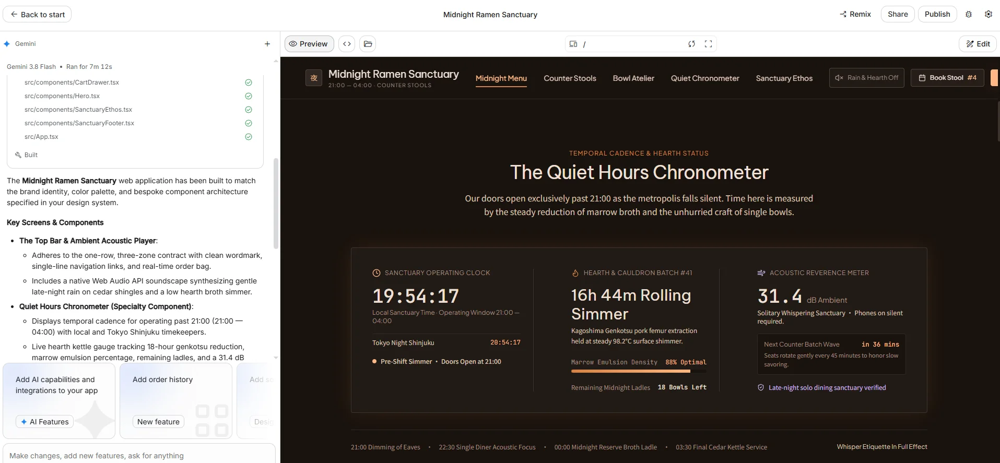

看得懂開關
就修得好燈
第十二單元｜JavaScript 基礎與 AI Agent 排錯。測驗③
- Course
- 互動媒體製作（選課號 01544）
- Class
- 進修四技多遊 4 年甲班 · G501
- Week
- 11/30 – 12/06
- Instructor
- 洪明顯
- 本週型態
- 影片 60 分＋面授 1 節
- 本週評量
- 測驗③
操作方式：點下方「上一頁／下一頁」，或使用鍵盤 ← → 翻頁。
本單元目錄
這週不寫 JavaScript。你要學的是兩件事：讀懂它在做什麼、壞掉時知道去哪裡找原因。
看完這支影片，你能夠……
用「房子」比喻說出 HTML、CSS、JS 的分工
用 三個問題（抓誰、等什麼、做什麼）讀懂一段 JS
打開 Console，從紅字看出是哪一行、哪一種錯
判斷 Gemini 的修改建議 能不能照用
凌晨三點，網站還說「營業中」
十二席拉麵凌晨兩點打烊。一位客人三點看到網站寫「營業中」，騎車過去，鐵門是拉下來的。
HTML 沒錯
標籤都在、結構正確。
CSS 沒錯
顏色漂亮、排版正常。
三兄弟：骨架、裝潢、水電
哪裡是門、哪裡是牆、哪裡是窗。
「這裡有一個按鈕」。
牆刷什麼顏色、門多寬。
「按鈕是橘色、圓角」。
按下開關，燈會亮。
「按了按鈕，選單會打開」。
JS 在網頁上常做的四件事
打開你 Stitch 匯出的檔案，裡面的 <script> 多半就是做下面其中一件。
顯示／隱藏
手機選單 ☰ 按了展開
依條件改內容
依時間顯示營業中／休息中
回應點擊
點「看更多」展開說明
檢查輸入
訂位表單沒填電話會提醒
讀 JS 只要問三個問題
就像看電燈開關的配線：這條線接到哪盞燈？按下哪個開關才會動？動了之後發生什麼事？
| 問題 | 程式碼長相 | 白話 |
|---|---|---|
| ① 抓誰 | document.getElementById('menu') | 找到 id 是 menu 的那個元素 |
| ② 等什麼 | addEventListener('click', …) | 等它被點擊 |
| ③ 做什麼 | classList.toggle('hidden') textContent = '休息中' | 切換顯示／隱藏 把文字換掉 |
示範① 讀懂手機選單按鈕
<button id="menuBtn">☰</button> <nav id="menu" class="hidden">…</nav> <script> // ① 抓誰：按鈕和選單 const btn = document.getElementById('menuBtn'); const menu = document.getElementById('menu'); // ② 等什麼：按鈕被點擊 btn.addEventListener('click', function () { // ③ 做什麼：選單的 hidden 有就拿掉、沒有就加上 menu.classList.toggle('hidden'); }); </script>
hidden 是 Tailwind 的 class，等於 CSS 的 display:none（W5 解碼表）。
所以這段程式的白話是：按一下 ☰，選單出現；再按一下，選單消失。
注意 JS 和 HTML 靠 id 對上。id 拼錯一個字母，開關就接不到燈。
跟做① 讀懂「營業中」標籤
請暫停影片，用三個問題讀這段程式，再展開答案對照。
const badge = document.getElementById('status'); const hour = new Date().getHours(); // 現在幾點（0–23） if (hour >= 21 || hour < 2) { badge.textContent = '營業中'; } else { badge.textContent = '休息中'; }
展開參考答案
- 抓誰：id 是
status的標籤 - 等什麼：不用等，網頁一打開就執行一次
- 做什麼：21 點以後或凌晨 2 點前顯示「營業中」，其他時間「休息中」
||讀作「或」：兩個條件只要成立一個就算數
Console：瀏覽器幫你寫好的報案單
JS 壞掉時，畫面通常什麼都不說，只是「沒反應」。但瀏覽器在後台已經寫好一張報案單了。
按 F12
W5 學過的開發者工具
切到 Console
上方分頁「主控台」
找紅字
紅字＝錯誤，黃字＝警告
看最右邊
index.html:42＝第 42 行
Uncaught TypeError: Cannot set properties of null (setting 'textContent') at index.html:42 // 白話：第 42 行想改一個「不存在的東西」的文字
三種最常見的壞法
| Console 說 | 白話 | 第一步檢查 |
|---|---|---|
| Cannot set properties of null | 開關接不到燈：抓的東西不存在 | id 拼字、大小寫；<script> 是不是放在元素前面（在 head 裡） |
| … is not defined | 叫了一個不存在的名字 | 變數或函式名稱拼錯 |
| （沒有紅字，但結果不對） | 配線沒斷，邏輯錯了 | 條件判斷：時間範圍、"false" 字串不等於 false |
示範② 用 Gemini 排錯四步
複製紅字
整行錯誤訊息，含行號
貼相關程式
出錯那段＋它要抓的 HTML
預期 vs 實際
「應該 X，但現在 Y」
要它先解釋
說明錯在哪，再給修改
錯誤訊息：Cannot set properties of null (setting 'textContent') at index.html:42 相關程式：（貼上第 38–46 行，以及 id="status" 那一行 HTML） 預期：首屏顯示「營業中／休息中」 實際：標籤是空的 請你：用沒學過程式的人聽得懂的話，先說錯在哪，再告訴我只要改哪一行。
跟做② 找出壞掉的那一個字
下面這段程式，Console 顯示 Cannot set properties of null。先自己找，找不到再問 Gemini。
<span id="status"></span> <script> const badge = document.getElementById('Status'); badge.textContent = '營業中'; </script>
展開參考答案
'Status' 的 S 是大寫，HTML 裡是小寫 status。JS 分大小寫，所以抓到 null（空的），第二行就壞了。這跟 W11 檔名要全小寫是同一個道理。
請 AI 加互動：限定「原生 JS、同一個檔案」
Stitch 畫的按鈕很多只是「樣子」。十二席首頁的「開啟地圖導航」看起來能按，打開程式碼才發現：按下去只會跳出一句提示，根本沒有開地圖。
<button onclick="alert('正在開啟導航：台中市西區精誠路 12 巷 12 號')">開啟地圖導航</button> <!-- alert 只會跳出提示框，不會打開地圖 -->
# 請 AI 加互動的提問模板 我的狀況：Stitch 匯出、在 VS Code 改過的 index.html 我想要：按「開啟地圖導航」時，用 Google 地圖 開啟「台中市西區精誠路 12 巷 12 號」 限制：用原生 JavaScript 或 HTML，寫在同一個檔案； 不要用 React，不要改其他區塊 相關程式碼：（只貼那一個 button） 請你：先說明這段在畫面上做什麼，再告訴我改哪裡
為什麼要寫「限制」
沒寫限制，AI 常會給你一整套新的寫法，甚至改用 React。寫清楚「原生、同一個檔案、只改這裡」，它給的答案你才放得回去。
好答案長什麼樣子？
很可能連 JS 都不用：把 <button> 改成 <a href="https://www.google.com/maps/search/?api=1&query=台中市西區精誠路12巷12號" target="_blank">。能用 HTML 解決的，就不必寫 JS，這也是判斷 AI 答案好不好的一個標準。

實測把十二席首頁從 Stitch 送到 AI Studio，它不是幫你「加功能」，而是重新做一個 App：
- 變成 React＋TypeScript 專案（一堆
.tsx檔），雙擊打不開，W14 也不能直接上線 - 內容整個走樣：店名變英文、價格變美元、營業時間變成 04:00、多出企劃書沒有的頁面
本課做法：把你自己的 index.html 片段貼給 Gemini，用上面的模板問。
AI 的建議，你負責驗證
Gemini 很會修，但它看不到你的畫面，有時候會「修好一個、弄壞兩個」。
「建議你把整份檔案改成以下版本……」（貼回 300 行）
它可能順手把你的配色、文字也換掉了。
「第 42 行的 'Status' 改成 'status'。」
改一處、看得懂為什麼、改完可以馬上驗證。
本週任務與測驗③
8 題單選，不用寫程式。題目會給你一段程式碼或 Console 訊息，問你「壞在哪」、「下一步該做什麼」、「AI 這樣建議能不能照用」。
練習（不計分，建議做）
在自己的頁面加一個簡單互動（例如 12.6 的選單、12.7 的營業標籤，或 12.12 的地圖按鈕），用 12.12 的模板請 Gemini 改好給你，用三個問題寫下它在做什麼。